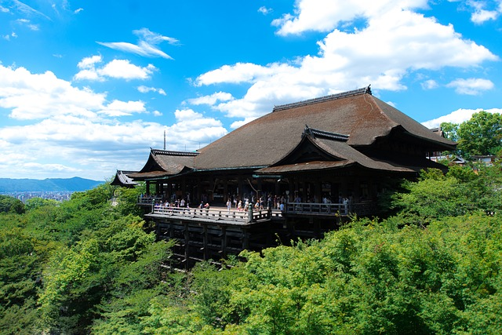

| 후시미 이나리 신사 후시미 이나리 신사는 일본 교토부에 있는 신사이다. 매년 1월 1일이 되면 많은 사람들이 모인다. 영화 '게이샤의 추억'의 촬영지로 유명하다. 일본전역에 3만개 정도 있는 이나리신사의 본점으로, 이나리신을 섬기고 있다. 주소: 68 Fukakusa Yabunouchicho, Fushimi Ward, Kyoto, 612-0882 일본 영업시간: 24시간 영업 홈페이지: www.kr.jal.co.jp
|
|
| 기요미즈데라 기요미즈데라는 교토부 교토 시 히가시야마 구에 있는 사원이다. 더 완전한 이름으로 오토와산키요미즈데라로도 불린다. 본존은 천수관음, 개기는 엔친이다. 관세음보살을 안치한 33곳 중 관음영지의 16번째 영지이다. 사원은 유네스코 세계유산으로 지정된 고도 교토의 문화재의 일부이다. 주소: 294 Kiyomizu, Higashiyama Ward, Kyoto, 605-0862 일본 홈페이지: www.kyototourism.org |
 |
| 아라시야마 아라시야마는 일본 교토 서부 외곽에 위치한 지역이다. 또한 오이가와 강을 가로 지르는 산을 가리키며 지구를 배경으로한다. 아라시야마는 전국적으로 지정된 사적지와 경치가 아름다운 곳이다. 주소: Ukyo Ward, Kyoto, 616-0007 일본
|